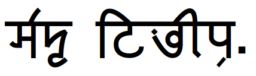
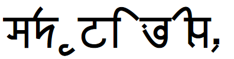

トップへ戻る
バート文字・バート語文法速習
バートさんがjekto.vatimelijuにバート語を教えてくれるサイト。自学自習とも言う。
環境テスト
↓のテキストが
↓の画像のように表示されているなら正常。（Windows 10上のFirefox 66.0.3 (64-bit)とGoogle Chrome 74.0.3729.131 (64-bit)、macOS High Sierra 10.13.6上のFirefox 66.0.3 (64-bit)とGoogle Chrome 73.0.3683.103 (64-bit)とOpera 58.0.3135.132とLunascape Phoebe 0.18.1、Ubuntu 18.04.2上のFirefox 65.0 (64-bit)で動作確認済。）

↓の画像のように表示されているならダメ。（Windows上のEdge 42.17134.1.0、macOS High Sierra 10.13.6上のSafari 12.1でこうなることを確認済み。）
